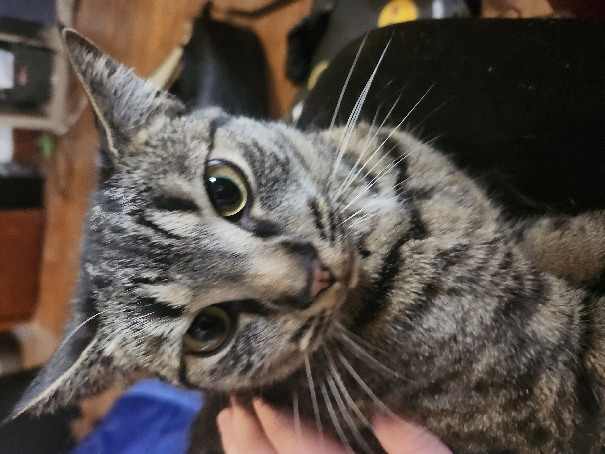

My interests are computer science and math; video games and books; and good discussions with friends. And good food and drink. I live year-round in Boone, and it's a pretty good area. There's not a ton going on, but in some capacities, it's enough. Also, the nature's great. Although, I almost surely will move from Boone soon after my degree is completed to get work.
I started at App State in 2021, and when I began my college career here, I knew I wanted to major in Computer Science. In high school, I had taken some classes and participated in clubs relating to software engineering and other computer skills. As I began at App State and reviewed the curriculum for my Computer Science program, I decided there wasn't enough math. Math has always been a subject I enjoy and perform strongly with, so I wanted to do a good amount of math at college. So, I decided to add a second major of Mathematics. These two majors do not involve much writing.
Writing is one of those activities I want to like, and I sometimes do, but that enjoyment does not come as easily as it does with coding or solving math equations. I think this sources in part from my experience with writing before college. I don't recall writing for myself, with all or almost all intent or purpose behind writing to be for someone else or a further goal like scoring a good grade. Furthermore, I remember frequently having assignments where I needed to share about myself. At the time, this felt uncomfortable in it's associated vulnerability. Now, as I write this for example, this feeling is not as strong. That being said, I am making choiceful ommisions in this curated description of myself - many of these made for avoiding vulnerabilty. Of course though, any way I could choose to write this would have it's choiceful inclusions and exclusions, so there's no "dishonesty" here, for whatever that matters. "All the world's a stage"
In continuation of this act, or portrayal of myself, I'll share my current attitude towards writing. I'd like to write; I want to write fiction and write on my opinions and insights. Since I've realized this, inattentiveness and low discipline have held me back from actualizing these intentions. I'm working on these problems, which naturally are relevent in other areas of my life, and hope with management of these, I can write some works I am proud of. That being said, under added structure and incentive, I have written some of what I consider fairly decent and have pride for.
In this RC2001 course, I was more persuasively led to write the works which can be found by following the "Works" link on the bottom of this page. Among these works, I'm most satisfied with my Literature Review. It's not great, but it took a fair amount of effort and had many gaps of freedom (e.g. choice of topic, choice of sources, choice of throughlines and analysis). That need for effort and the gaps of freedom can be said to form a space of sorts that I needed to fill; I think the "space" was larger for this assignment than any other. As for the other assignments, there aren't any I feel poorly about, but I don't think they represent my ability as well.
This course was somewhat difficult, but the difficult part was not in writing competent work rather than stuff that's poor; It was the discipline needed to write these assignments. The Literature Review was extensive. And the period of about April 15th to April 27th felt tight because of the Op-ed due dates, the reflection due, and concurrent assignments in other class. I am satisfied with myself that I completed all assignments in this course with fair result.
